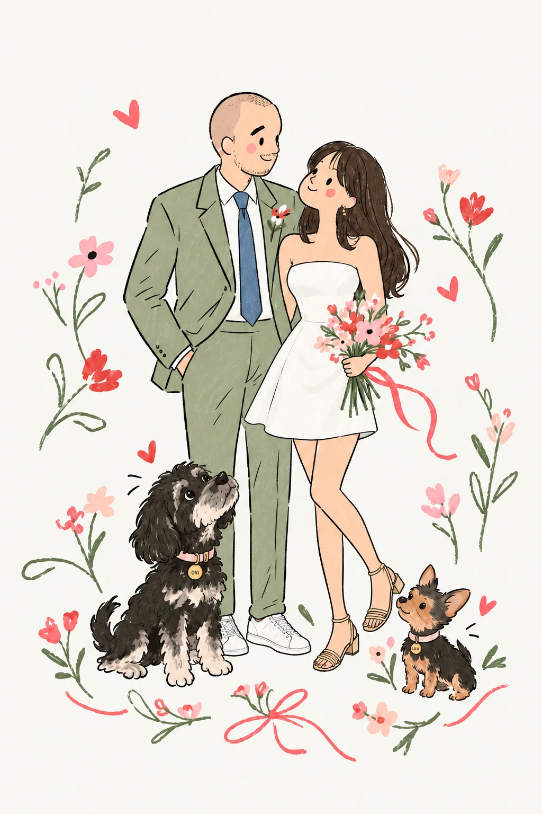
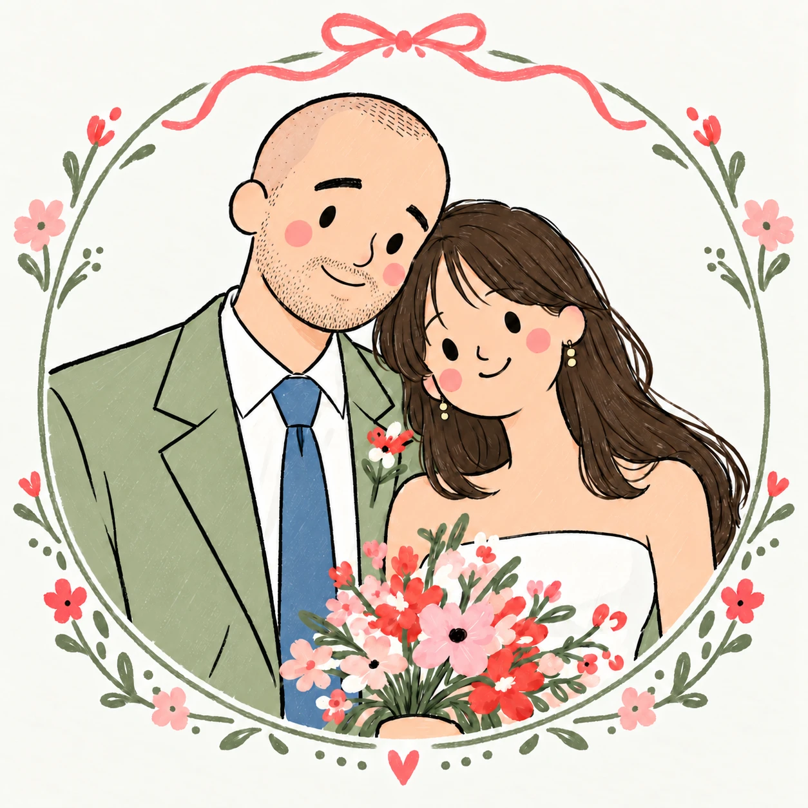

Karo & Ale

Estamos muy felices de comenzar esta nueva etapa juntos y nos encantaría compartir este momento tan especial con ustedes.
Por eso, queremos invitarlos a celebrar nuestro matrimonio civil con una linda cena, rodeados de las personas que más queremos.
Paso 1 de 2
Desmarca a quien no pueda ir.
Paso 2 de 2
Si no hay, se deja en blanco.

¡Nos hace mucha ilusión compartir esta noche con ustedes y celebrar juntos el comienzo de esta nueva aventura!
Con mucho cariño,
Karo & Ale
El plazo para cambiar la respuesta cerró el viernes 6 de noviembre.
Con mucho cariño,
Karo & Ale
El plazo para cambiar la respuesta cerró el viernes 6 de noviembre.